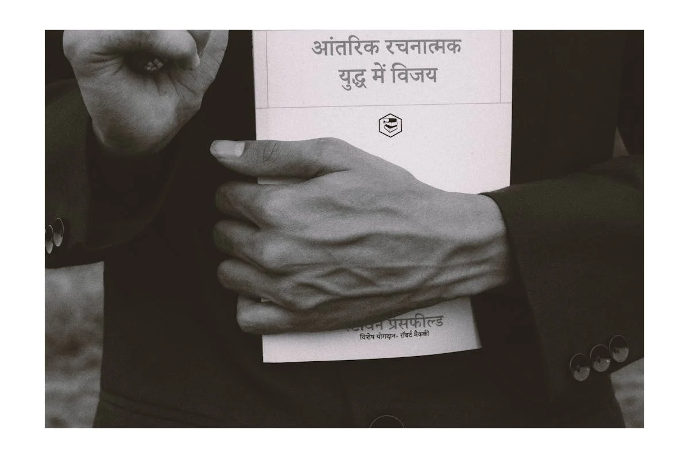

Making AI speak 9 Indian languages: Hindi, Bengali, Marathi, Telugu, Bhojpuri, Kannada, Magadhi, Chhattisgarhi, Maithili - Open-source text-to-speech models

This dataset is part of the initiative SYSPIN (SYnthesizing SPeech in INdian languages), that develops large open-source Text-to-Speech (TTS) corpora, i.e., speech training datasets and AI models in 9 Indian languages, namely – Bengali, Bhojpuri, Chhattisgarhi, Hindi, Kannada, Magahi, Maithili, Marathi, and Telugu. This data is useful for those wishing to build voice-enabled, user-friendly applications in Indian languages. Through voice-based solutions, these AI models can be used to empower communities that do not have access to digital services in their own native language. They can be used by private companies, researchers, NGOs or government departments to develop digital applications.
The datasets and TTS models are available to the AI community and anyone wishing to build voice-enabled applications in Indian languages. Given the distribution of speakers. some of the languages are especially useful for programmes wishing to engage with rural communities and promote sustainable agriculture in rural settings.
Data characteristics
The Data is fully open-sourced and can be accessed at:
• IISc website: <https://spiredatasets.ee.iisc.ac.in/syspincorpus>
TTS Dataset:
• License: CC-BY 4.0
• Data Type: Audio recording
• Sentence creation: Variety of domains covered in the sentences/text and phonetically rich sentence selection
• Accounts for dialect variability
• Voice artist selection and balanced duration per voice artist
• Voice recording: 40 hours of recording by 1 male voice artist and 1 female voice artist for each of the 9 languages
• Studio-quality audio with 48kHz, 24 bits per sample from every voice artist
• Data was collected and created over 3 years from 2021-2024
Model characteristics
Processed Data:
The validated sentences were recording in a recording room (size 10'3" x 5'9") by voice artists using a Neumann TLM-103 studio microphone and Audio Interface UAD Apollo Twin X.
Application:
IISc has organised the LIMMITS challenges (2023, 2025) as part of IEEE International Conference on Acoustics, Speech, and Signal Processing (ICASSP) to build TTS voices, share web API for evaluation, and allow researchers to contribute towards the development of streaming and neural codec-based TTS systems.
Audio files of Audiopedia Foundation’s content created in the low-resource language Chhattisgarhi using IISc TTS Chhattisgarhi model can be found here.
How to use
The TTS models can be used to develop innovative solutions and voice-based services for Indians in their native language. This would be especially beneficial for those who cannot read/write or have speech and visual disabilities but can access digital services through audio/voice-based mediums. The data and models are a crucial stepping stone for developing such assistive technologies. Including low-resource languages, some of which do not even have enough print/digital literature, would benefit vulnerable communities for whom language barriers make access to technological solutions even more difficult. Given the distribution of speakers. some of the languages are especially useful for programmes wishing to engage with rural communities and promote sustainable agriculture in rural settings. The 720 hours of open-source TTS data also present immense opportunities for academic and industrial research.
You can directly access and use the models on Bashini here via web and API: https://anuvaad.bhashini.gov.in/
Datasets
Use cases
Additional resources
About
Powered by / Provided by: Indian Institute of Science (IISc)
Catalyzed by: Bhashini, FAIR Forward - AI for All (https://www.bmz-digital.global/en/overview-of-initiatives/fair-forward/), GIZ
Financed by: BMZ (https://www.bmz-digital.global/en/digital-transformation-and-development-cooperation/)
Authors: Philipp Olbrich, Prasanta Ghosh
Contact: Dr. Prasanta Ghosh (prasantag@iisc.ac.in)